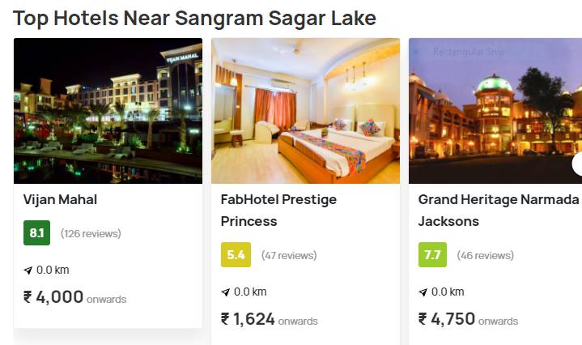
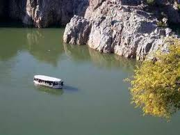

Sangram Sagar Lake is a popular tourist spot in Jabalpur famous for migratory birds and exotic aquatic animals.
Situated near Bajnamath Fort, the lake boasts of serene atmosphere and gorgeous locales.
It also has boasting and fishing activities. People also come here to picnic amidst beautiful nature and green surroundings.

If you wish to stay in a private calm environment, then you don't have to worry as Madhya Pradesh offers a wide variety of homestays which will make you ditch hotels.
There is a historical fort called Bajnamath Fort, built by King Sangram Shah by the lake, adding grace to the beauty of this place with its brilliant architecture.
Besides, an ancient temple by the lake also attracts thousands of devotees to this lake all through the year.
Thus, does not matter if you are seeking serenity, spirituality or a walk into the history, Sangram Sagar Lake is an ideal place for sightseeing in Jabalpur.
One of the best places to visit in Jabalpur, Sangram Sagar Lake serves as an excellent weekend getaway for people seeking an escape from the monotony of city life.